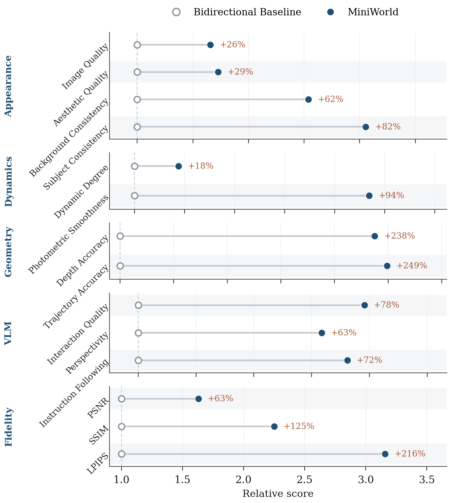

MiniWorld-B
0.12B- Depth
- 12
- Width
- 768
Research project · 2026
A minimal and reproducible recipe for training action- and pose-conditioned streaming video world models from scratch.
Peking University
Video world models predict future observations conditioned on historical observations and control signals. Unlike conventional video generators, which mainly capture visual appearance and motion, they learn the dynamics governing how an environment evolves under agent actions — a fundamental building block for embodied AI and interactive simulation.
Recent progress has largely relied on adapting pretrained video generators through post-training or distillation. These pipelines are complex, costly, and inherit a mismatch between bidirectional pretraining and causal streaming inference. Training from scratch is feasible and scalable, yet the community still lacks a lightweight, transparent, reproducible baseline.
MiniWorld fills that gap. It uses a block-causal Video Diffusion Transformer trained with Rectified Flow in the latent space of a pretrained video VAE, and builds on Diffusion Forcing with a chunk-wise non-decreasing noise schedule and two-stage continued training. At inference, a rolling KV cache and pipelined asynchronous denoising keep streaming generation within a bounded compute budget.
The entire model trains in several days on a single 8-GPU server. We release the complete training and inference codebase, pretrained checkpoints, and implementation details as an accessible baseline for research on long-horizon generation, temporal memory, and train-test alignment.
Long-horizon streaming rollouts under robot actions and camera trajectories. Hover to play or select a video to view it at full size.
The same block-causal architecture is used throughout training and deployment, reducing the mismatch between the learning objective and autoregressive generation.
Block-causal Video DiT. Tokens interact bidirectionally within each chunk and causally across chunks.
Chunk-oriented Probability Propagation. CoPP samples non-decreasing chunk-wise noise schedules aligned with streaming inference.
Two-stage continued training. Short-clip training is followed by long-context continuation, extending the horizon without retraining.
Rolling-KV streaming. Committed history is reused without recomputation while the online denoising cost remains bounded.
MiniWorld is evaluated on DROID and RealEstate10K against a bidirectional sliding-window baseline under long-horizon streaming generation.
MiniWorld improves appearance, dynamics, geometry, VLM-based quality, and frame-level fidelity over the bidirectional baseline.

All variants share the same block-causal architecture and conditioning interface, differing only in depth and width.
@article{zhao2026miniworld,
title = {MiniWorld: Democratizing the Training of Video World Models from Scratch},
author = {Zhao, Yian and Zheng, Ruochong and Guo, Hongcan and Yan, Yu and Zhang, Jian and Chen, Jie},
year = {2026}
}